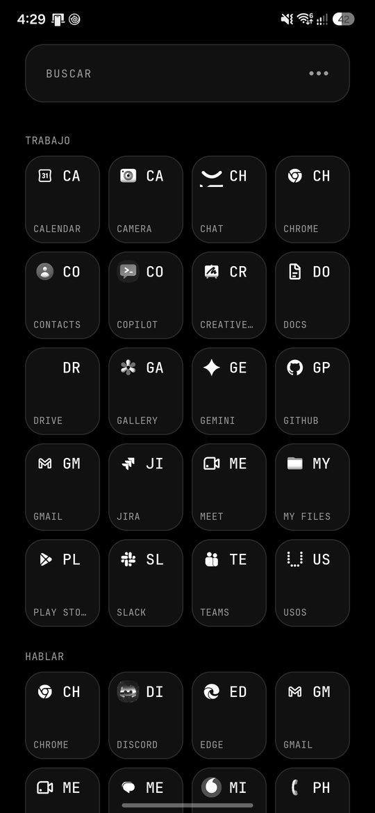
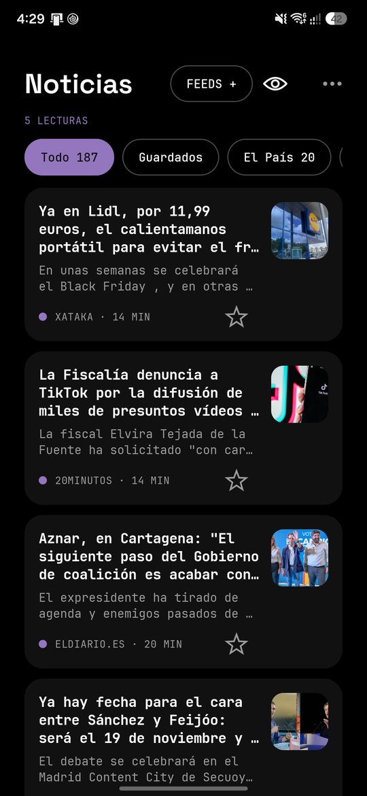
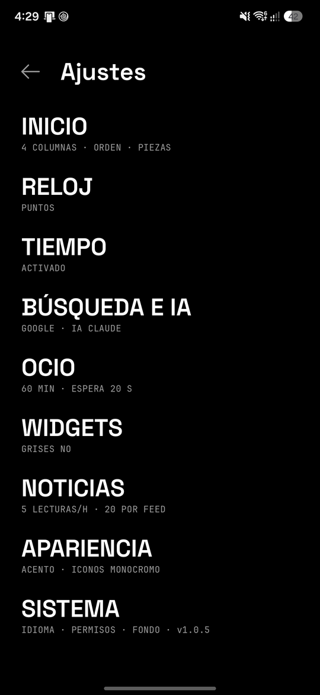

The launcher that does not want you to use it
One black screen, a dot-matrix clock and your apps sorted by what you use them for. Leisure apps wait frozen until you ask for time. A minimalist Android launcher, free and source-available for non-commercial use.
Your phone is built so you never put it down
A home screen full of coloured icons, red badges and social apps one tap away. You pick up the phone to check the time and end up twenty minutes later in something you never planned.
Usos replaces it with a black screen showing a clock, a week strip and a search bar. No dock, no wallpaper, no colours. Leisure apps do not open on the first tap: there is a daily budget and a wait before you get in.
Everything you need, nothing that distracts you
Sections by use
Work, Talk, Move, Personal, Leisure and Other. Apps sort themselves and you can reassign them any time.
Editable mosaic
Each section unfolds into a tile mosaic. Long-press a tile to move it, resize it or remove it.
Frozen Leisure
A daily budget of minutes, a wait before opening and a real block through the accessibility service: finding the app another way does not work.
Search and AI button
Apps, web addresses and search in the engine you choose, plus a button to ask your favourite AI assistant.
Widgets
A panel with Android widgets in the same grid, in greyscale if you like.
News by reads
RSS/Atom feeds. Opening a new article spends one read from a bucket that refills over time.
Discreet alerts
A dot or a border shows which app has notifications. It only reads which app, never the content.
Optional icons
No icons by default. Turn them on in monochrome or in colour.
Weather
Optional weather and next event on the home screen. Off by default.
100% customisable
Columns, rows, sizes, clock (dots, digital, text, analogue), accent colour and tap gestures.
English and Spanish
Full interface in both languages, with its own selector.
What it looks like






To study, to work, to switch off
Study
Social media and videos wait until you are done. Your agenda and study apps are one tap away.
Work
Mail, messages and maps at hand; the rest out of sight until you need it.
Switch off
Get back to using your phone on purpose: you ask for time, use it and it ends.
No analytics, no accounts, no ads
Usos collects no data and asks for no sign-up. The network is only used for your news feeds, search suggestions and weather (if you turn them on) and to check GitHub for a new version. Notification alerts read only which app they come from, never the content.
How to install
- Download. Get the APK from the button above or from Releases.
- Allow the install. Allow installing from unknown sources for your browser or file manager and open the APK.
- Pick Usos as home. Press Home and choose Usos as the home app.
- Grant the permissions. The first-run guide asks for usage access and the accessibility service that blocks frozen apps. On Android 13+ you may need Allow restricted settings in the app info first.
Frequently asked questions
Is it free?
Yes. Usos is free for personal and non-commercial use.
Why is it not on Google Play?
It needs an accessibility service to block apps and is distributed straight from GitHub Releases. It is an open personal project.
Does it update itself?
It checks the latest GitHub release at most once every 24 h when opened. It downloads the APK, verifies it has the same signing certificate and installs it through the system installer. You can switch it off in Settings. Updating never resets your configuration.
Will it work on my phone?
It needs Android 13 or newer. It does not depend on any manufacturer apps.
Can I translate it?
Yes. There is a step-by-step guide in TRANSLATING.md and contributions are welcome.
Can I use it commercially?
No. The licence is PolyForm Noncommercial 1.0.0: free for personal and non-commercial use.